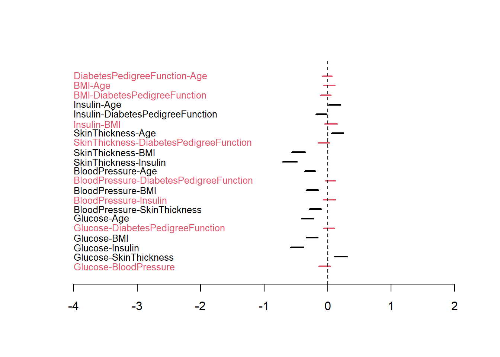

Dizemos que o vetor \(\boldsymbol{X}'=(X_1,\ldots,X_q)\) tem distribuição normal multivariada se sua função densidade é dada por
\[f(\boldsymbol{x}|\boldsymbol{\mu},\Phi)=\frac{|\Phi|^{1/2}}{(2\pi)^{q/2}}\exp\left\{-\frac{1}{2}(\boldsymbol{x}-\boldsymbol{\mu})'\Phi(\boldsymbol{x}-\boldsymbol{\mu})\right\}\] onde \(\boldsymbol{x}\) e \(\boldsymbol{\mu}\) pertencem à \(\mathbb{R}^q\) e \(\Phi\) é uma matriz \(q\times q\) positiva semi-definida denominada matriz de precisões.
A função de verossimilhança deste modelo é dada por
Sejam \[\begin{align}\boldsymbol{\bar{x}}&=\frac{1}{n}\sum_{i=1}^n \boldsymbol{x}_i\\ S&=\frac{1}{n}\sum_{i=1}^n(\boldsymbol{x}_i-\boldsymbol{\bar{x}})(\boldsymbol{x}_i-\boldsymbol{\bar{x}})',\end{align}\] onde \(\boldsymbol{x}\) e \(S\) são denominados vetor de médias amostrais e matriz de covariâncias amostral, respectivamente. Como,
\[\begin{align}
&\sum_{i=1}^n[(\boldsymbol{x}_i-\boldsymbol{\bar{x}})-(\boldsymbol{\mu}-\boldsymbol{\bar{x}})]'\Phi[(\boldsymbol{x}_i-\boldsymbol{\bar{x}})-(\boldsymbol{\mu}-\boldsymbol{\bar{x}})]=\\&\sum_{i=1}^n(\boldsymbol{x}_i-\boldsymbol{\bar{x}})'\Sigma^{-1}(\boldsymbol{x}_i-\boldsymbol{\bar{x}})+n(\boldsymbol{\mu}-\boldsymbol{\bar{x}})'\Phi(\boldsymbol{\mu}-\boldsymbol{\bar{x}})=\\
&\sum_{i=1}^n\hbox{traço}\left((\boldsymbol{x}_i-\boldsymbol{\bar{x}})(\boldsymbol{x}_i-\boldsymbol{\bar{x}})'\Phi\right)+n(\boldsymbol{\mu}-\boldsymbol{\bar{x}})'\Phi(\boldsymbol{\mu}-\boldsymbol{\bar{x}})=\\
&n\sum_{i=1}^n\hbox{traço}\left(S\Phi\right)+n(\boldsymbol{\mu}-\boldsymbol{\bar{x}})'\Phi(\boldsymbol{\mu}-\boldsymbol{\bar{x}})
\end{align}\] teremos que
Distribuição Wishart Dizemos que a matriz aleatória \(\Phi\) de dimensão \(q\times q\), definida o espaço de matrizes reais e positivas definidas, tem distribuição Wishart\((V,\nu)\) se sua função densidade é dada por
\[f(\Phi)\propto |\Phi|^{\frac{\nu-q-1}{2}}e^{-\frac{1}{2}\text{traço}(V^{-1}\Phi)}.\] Sua média é dada por \[E(\Phi)=\nu V.\]
Observe que a função de verossimilhança pode ser decomposta como
Portanto, a distribuição a posteriori é a Normal-Wishart, onde: \[\boldsymbol{\mu}|\Phi,\text{dados}\sim \hbox{Normal}\left( \boldsymbol{\bar{x}},\frac{\Phi^{-1}}{n}\right),\]\[\Phi|\hbox{dados}\sim\hbox{Wishart}(n-1,S^{-1}/n).\]
Neste caso, o vetor de médias amostrais é a estimativa para \(\boldsymbol{\mu}\) e a estimativa para \(\Phi\) é \[E(\Phi)=\frac{n-1}{n}S^{-1}\]
A posteriori é dada por \[f(\boldsymbol{\mu},\Phi|\text{dados})\propto |\Phi|^{1/2}e^{-\frac{1}{2}[(\boldsymbol{\mu}-\boldsymbol{m})'\Phi(\boldsymbol{\mu}-\boldsymbol{m})+n(\boldsymbol{\mu}-\boldsymbol{\bar{x}})'\Phi(\boldsymbol{\mu}-\boldsymbol{\bar{x}})]}|\Phi|^{\frac{n+\nu_0-q-1}{2}}e^{-\frac{1}{2}[\text{traço}(V^{-1}\Phi)+\text{traço}(nS\Phi)]}\] Observe que
\[\begin{align}&n_0(\boldsymbol{\mu}-\boldsymbol{m})'\Phi(\boldsymbol{\mu}-\boldsymbol{m})+n(\boldsymbol{\mu}-\boldsymbol{\bar{x}})'\Phi(\boldsymbol{\mu}-\boldsymbol{\bar{x}})=\\&\boldsymbol{\mu}'(n+n_0)\Phi\boldsymbol{\mu}-2\boldsymbol{\mu}'(n+n_0)\Phi\underbrace{\frac{n_0\boldsymbol{m}+n\boldsymbol{\bar{x}}}{n_0+n}}_{\boldsymbol{m}_1}+\boldsymbol{m}'(n_0\Phi)\boldsymbol{m}+\boldsymbol{\bar{x}}'(n\Phi)\boldsymbol{\bar{x}}\\&(\boldsymbol{\mu}-\boldsymbol{m}_1)'(n+n_0)\Phi(\boldsymbol{\mu}-\boldsymbol{m}_1)+\boldsymbol{m}'(n_0\Phi)\boldsymbol{m}+\boldsymbol{\bar{x}}'(n\Phi)\boldsymbol{\bar{x}}-\boldsymbol{m}_1'(n+n_0)\Phi\boldsymbol{m}_1\\&(\boldsymbol{\mu}-\boldsymbol{m}_1)'(n+n_0)\Phi(\boldsymbol{\mu}-\boldsymbol{m}_1)+(\boldsymbol{m}-\boldsymbol{\bar{x}})'(\frac{n_0n}{n+n_0}\Phi)(\boldsymbol{m}-\boldsymbol{\bar{x}})\\&(\boldsymbol{\mu}-\boldsymbol{m}_1)'(n+n_0)\Phi(\boldsymbol{\mu}-\boldsymbol{m}_1)+\text{traço}\left( \frac{n_0n}{n+n_0}(\boldsymbol{m}-\boldsymbol{\bar{x}})(\boldsymbol{m}-\boldsymbol{\bar{x}})'\Phi\right)\end{align}\] o que implica em,
Portanto, a posteriori tem distribuição normal-Wishart, onde \[\mu|\Phi,\text{dados}\sim\hbox{Normal}\left(\boldsymbol{m}_1,\frac{\Phi^{-1}}{n+n_0}\right)\] e \[\Phi|\text{dados}\sim\hbox{Wishart}\left(n+\nu_0,V_1\right)\]
10.4 Modelos de grafos gaussianos
Um grafo é uma estrutura utilizada para representar relações entre objetos. Formalmente, um grafo \(G\) é definido como um par ordenado de conjuntos \((V, E)\), onde:
\(V\) é um conjunto finito e não vazio de (ou nós), que representam as entidades ou objetos.
\(E\) é um conjunto de (ou ligações), onde cada aresta é um par de vértices \(\{u, v\} \in E\) que indica uma conexão ou relação entre os vértices \(u\) e \(v\).
Um (também conhecido como grafo Gaussiano Gráfico ou Rede de Markov Gaussiana) é um grafo \(G=(V, E)\) utilizado para representar as relações de independência condicional entre um conjunto de variáveis aleatórias \(X = (X_1, X_2, \ldots, X_p)'\).
Os \(V\) do grafo correspondem às variáveis aleatórias \(X_1, \ldots, X_p\).
As \(E\) do grafo indicam a presença de dependência condicional entre as variáveis. Uma aresta \(\{v_i, v_j\} \in E\) existe se e somente se as variáveis \(X_i\) e \(X_j\) não são condicionalmente independentes dado todas as outras variáveis no conjunto, formalmente \(X_i \not\perp X_j \mid X_{V \setminus \{v_i, v_j\}}\).
Para o caso específico de um vetor aleatório Gaussiano \(X \sim N(\mu, \Phi^{-1})\), a estrutura do grafo de independência condicional é diretamente determinada pela esparsidade da matriz de precisão \(\Phi\). Especificamente, para \(i \neq j\), a aresta \(\{v_i, v_j\}\) está no grafo se e somente se o elemento \((i, j)\) da matriz de precisão \(\Phi\) for zero (\(\phi_{ij} = 0\)). Dessa forma, os zeros fora da diagonal da matriz de precisão revelam a estrutura das independências condicionais no modelo.
Exemplo: Pima
O conjunto de dados abaixo contém informações diagnósticas e de saúde de 768 mulheres da tribo Pima, que vivem perto de Phoenix, Arizona, EUA. O objetivo original era prever o início do diabetes. Nosso objetivo aqui é verificar como as seguintes variáveis se relacionam:
Glucose: Concentração de glicose no plasma a 2 horas em um teste de tolerância à glicose oral.
A estimativa de -0,009 para a entrada que relaciona a idade com a função de diabetes na família mostra que estas duas variáveis devem ser independentes condicionadas com as demais.
Podemos inferir o grafo de independência condicional fazendo simulações de \(\Phi\) e criando intervalos de credibilidade para cada elemento fora da diagonal. Os intervalos que não contém zero implicam em dependência condicional.
# simulando da posterioriB <-5000Phi <-rWishart(B, n-1, solve(var(dados2))/n )# calculando os intervalos do credibilidadeplot.new()plot.window(ylim=c(0,22), xlim=c(-4,2))k=1for(i in1:6){for(j in (i+1):7){ qq <-quantile(Phi[i,j,], c(.025,.975)) Col=1if(qq[1]<0& qq[2]>0) Col=2segments(qq[1],k,qq[2],k , lwd =2, col = Col)text(-4,k, paste0( colnames(dados2)[i],'-',colnames(dados2)[j]),col=Col, cex=.8, adj=0) k <- k+1 }}abline(v=0,lty=2)axis(1)

O grafo correspondente é
require(igraph)
Carregando pacotes exigidos: igraph
Anexando pacote: 'igraph'
Os seguintes objetos são mascarados por 'package:stats':
decompose, spectrum
O seguinte objeto é mascarado por 'package:base':
union
Dado a Idade, a pressão arterial (PAS) é independente das demais variáveis.
Glucose, Insulina, Dobra da pele e Idade possuem interrelação.
Dado o conhecimento da glucose, o IMC é independente das demais.
Dado o conhecimento da Insulina, o pedigree é independente das demais.
Após encontrar essas relações, podemos verificar o quão fortes elas são. Em geral, quanto maior elas forem em valor absoluto, mais forte é a relação. Com relação ao sinal:
Se \(\phi_{i,j}>0\) então, a correlação entre as variáveis \(i\) e \(j\) condicionadas às demais é negativa
Se \(\phi_{i,j}<0\) então, a correlação entre as variáveis \(i\) e \(j\) condicionadas às demais é positiva
A partir dos intervalos obtibos, podemos inferir, por exemplo, que as relações entre Insulina e Dobra de pele são positivas. Isto já era esperado, pois a espessura da dobra da pele é uma medida direta da gordura subcutânea (a gordura logo abaixo da pele) e a gordura corporalé um dos principais fatores que contribuem para a resistência à insulina.